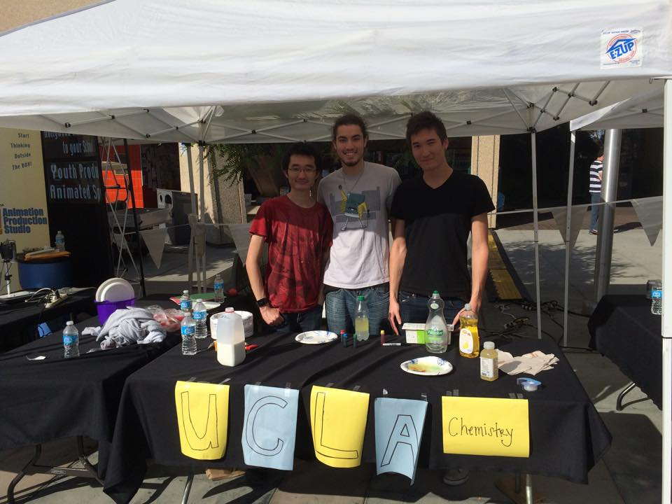

Tech Industry Problem
Lack of Diversity
Feb 22, 2015

Twitter's Reported Statistics on Employee Gender
There remain alarming gaps in the representation of some groups in the tech industry, reports The Washington Post. Data from big tech companies like Twitter, Google, Facebook, and LinkedIn show that the fastest growing industries are not growing multi-ethnic in proportion the the demography of the U.S. population. Google, for example, employs over 50,000 people, of which only 2% are black and 3% Hispanic. Furthermore, there is a discrepancy in the percentage of women in tech jobs. At companies such as Twitter, 10% of the tech jobs are held by women. What can be done about this?
One factor is perhaps a lack of interest in tech fields among these groups. I think that if children are more encouraged to pursue these carriers, it would cultivate interest and help offset the socioeconomic obstacles that these groups face. There are many non-profit organizations that hold outreach programs with this precise goal in mind. One of which is S.T.E.A.M. Nation.
Some friends and I at a S.T.E.A.M. Nation event.
There is a similar problem in chemistry. When I was in graduate school, I volunteered at some outreach events to try to cultivate interest in science among underrepresented groups. I can say with absolute conviction that it makes a difference. I think if tech companies sponsored more events like this, we'd see the right kind of growth in tech fields!